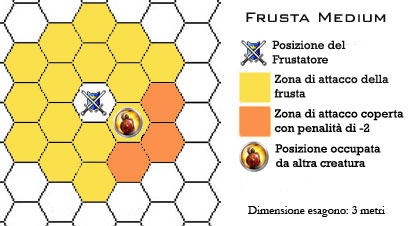

|
Le fruste da guerra sono armi estremamente particolari. Questa sezione del regolamento contiene, dunque, le regole particolari che occorre applicare quando si utilizza in combattimento una di queste armi. * Le Fruste da Guerra necessitano di agilità nell'uso in combattimento, per tale motivo chi utilizza quest'arma deve utilizzare nei suoi attacchi il modificatore al tiro per colpire concesso dal reaction adjustment della destrezza in luogo di quello basato sulla forza (la quale ultima abilità sarà, invece, regolarmente utilizzata per calcolare i danni provocati dall'attacco). * Con le Fruste da Guerra non è possibile effettuare la manovra di combattimento speciale dei vagabondi Lethal Attack.
* Utilizzando una
qualsiasi
Frusta da Guerra il costo base del colpo speciale
"Causare Grande Dolore" è pari ad
2
punti combattimento. Inoltre, al solo fine di determinare
se i danni provocati utilizzando tale colpo di combattimento sono pari ad almeno
il 10% dei punti ferita massimi (arrotondati per difetto) posseduti dalla
vittima (senza che sia, quindi causato effettivamente alcun danno aggiuntivo), i
danni prodotti con il dado base dell'arma saranno valutati il doppio (ossia da 2
a 6 danni). Tale criterio non sarà applicato ai dadi diversi da quelli del dado
base dell'arma (come, ad esempio, ai danni dovuti alla bravura nell'uso
dell'arma, all'uso di arti di combattimento, di manovre speciali, di colpi
generali di combattimento, alla forza, alla fattura o all'incantamento della
stessa arma). Quest'ultimo beneficio sarà applicato anche all'incantamento of
Pain (link). |
||||||||||
|
 |
* Le fruste da guerra
di dimensioni
medium sono lunghe 5 metri e possono colpire avversari che si trovano fino a
due posizioni (esagoni) di distanza.
Qualora, però, se per colpire
un nemico che non
si trova in corpo
a corpo la frusta
deve "superare" un
esagono occupato da un'altra creatura
(sia essa amica o avversaria),
chi la usa
riceverà una penalità di -2 al tiro per colpire.
Entro tale
distanza le creature armate di frusta da guerra possono anche effettuare
attacchi alle spalle di opportunità.
Non potranno, però, effettuare alcun attacco di opportunità contro chi
effettui solo un movimento di avvicinamento verso colui che impugna
l'arma
(se, quindi, in mappa
esagonale con dimensione degli esagoni di 3 m. un avversario posizionati
a due esagoni di distanza si avvicina semplicemente avanzando in un
esagono adiacente a chi usa la frusta quest'ultimo non potrà effettuare
alcun attacco di opportunità). |
||||||||||
|
|
* Le fruste da guerra di dimensioni large sono lunghe 8 metri e possono colpire avversari che si trovano fino a tre posizioni (esagoni) di distanza. Qualora, però, se per colpire un nemico che non si trova in corpo a corpo la frusta deve "superare" un esagono occupato da un'altra creatura (sia essa amica o avversaria), chi la usa riceverà una penalità di -2 al tiro per colpire per ogni esagono in questo modo occupato. Entro tale distanza le creature armate di frusta da guerra possono anche effettuare attacchi alle spalle di opportunità. Non potranno, però, effettuare alcun attacco di opportunità contro chi effettui solo un movimento di avvicinamento verso colui che impugna l'arma (se, quindi, in mappa esagonale con dimensione degli esagoni di 3 m. un avversario posizionati a due esagoni di distanza si avvicina semplicemente avanzando in un esagono adiacente a chi usa la frusta quest'ultimo non potrà effettuare alcun attacco di opportunità). Le fruste da guerra di dimensioni large sono difficili da maneggiare a breve distanza, per tale motivo chi le utilizza per attaccare avversari che si trovano in posizioni adiacenti alla propria (corpo a corpo) riceverà una penalità di -2 al tiro per colpire. |
||||||||||
|
|
Utilizzando le frusta da guerra è possibile utilizzare i seguenti particolari colpi speciali di combattimento: FRUSTATA SULLA MANO [ATTACCO]: Questo colpo speciale di combattimento può essere effettuato solo da chi è almeno esperto nell'uso della Frusta da Guerra. Con tale colpo speciale è possibile provare a colpire la mano di coloro impugnino un determinato oggetto per farlo cadere a terra (solo creature dotate di mani possono subire questo colpo e deve trattarsi di creature non immuni al dolore e che impugnino l’oggetto con una sola mano). Chi utilizza questo colpo speciale riceve una penalità al tiro per colpire di - 4 ed una penalità di -1 ai danni inferti dall'arma. Se il bersaglio viene colpito, costui, oltre a subire regolarmente i danni dell'attacco, dovrà superare un tiro salvezza su robustezza o lasciare cadere al suolo l’oggetto che stava impugnando. Se l’oggetto è impugnato con due mani costui riceve un bonus del +10% a tale tiro salvezza. Costo 3 punti combattimento. COLPO DI AVVILUPPAMENTO [ATTACCO]: Questo colpo speciale di combattimento può essere effettuato solo da chi è almeno abile nell'uso della Frusta da Guerra. Si noti che questo particolare colpo di combattimento può essere effettuato solo con il primo attacco che il personaggio effettua nel corso del round con l'arma principale non potendo essere effettuato con attacchi multipli successivi o secondari. Con tale colpo speciale è possibile provare ad avviluppare la frusta al corpo del nemico in modo che gli resti attaccata. Ovviamente il corpo del bersaglio prescelto deve avere un’anatomia compatibile con un avviluppamento (non può farsi, ad esempio, su un cubo gelatinoso) ed in ogni caso questo colpo speciale può essere effettuato solo su creature di dimensioni Small, Medium e Large. Chi utilizza questo colpo speciale riceve una penalità di - 1 al tiro per colpire e di +1 all'iniziativa. Se chi utilizza questo colpo speciale colpisce l'avversario, oltre a procurare i normali danni, riceverà una percentuale base di avviluppare il nemico che varia al variare della sua abilità nell'uso dell'arma come indicato nella seguente tabella (la competenza Whip Mastery può modificare ulteriormente tale tiro, vedi il LINK):
Se il tiro
percentuale ha successo la frusta si sarà agganciata al corpo del
bersaglio. Nel periodo in cui è avviluppata le due creature
non potranno
allontanarsi
ad una distanza superiore a 6 metri l’una dall’altre per le fruste da
guerra di dimensioni medium od a 9 metri per le fruste da guerra di
dimensioni large, la creatura avviluppata potrà effettuare le altre
normali azioni ma
riceverà una penalità
di -1 ai tiri per colpire, di +1 alla Classe Armatura e del 10% di
fallire nella concentrazione nel lancio delle magie.
Si noti che la frusta resterà avviluppata solo fino a che chi la
utilizza continua a reggerla nel corso del combattimento. |
||||||||||
|
|
Azioni particolari effettuabili esclusivamente quando la frusta è avviluppata al corpo di una creatura:
SCIOGLIERE LA FRUSTA
[AZIONE COMPLESSA]:
Sia la
vittima che è stata avviluppata dalla frusta che colui che l’ha
avviluppata possono provare a sciogliere la stretta dell’arma sul corpo
del bersaglio. Questo tentativo si considera un’azione complessa che
avviene al fattore iniziativa di una normale azione fisica e non fa
accumulare punti fatica. Quando quest’azione è posta in essere, colui
che l’effettua deve superare un tiro salvezza su riflessi. Se il tiro
salvezza riesce la stretta dell’arma sarà stata sciolta e la frusta sarà
stata liberata. Chi impugna la frusta potrà usare la competenza
Whip Mastery
per ottenere i seguenti modificatori al tiro salvezza:
successo critico +10%/successo +5%/fallimento -4%/fallimento critico -8%. |